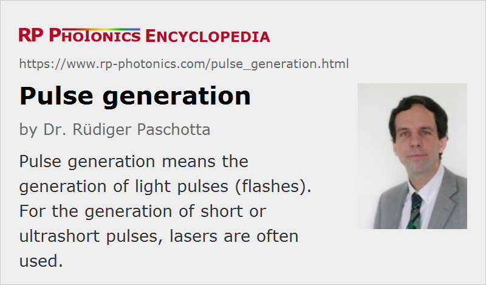

Pulse Generation
Definition: the generation of light pulses (flashes)
German: Pulserzeugung
Categories: light pulses, methods
How to cite the article; suggest additional literature
Author: Dr. Rüdiger Paschotta
Short or ultrashort optical pulses can in principle be generated by starting with a continuous light source and using a fast modulator, which lets the light pass only for a short period of time. However, such a method is not efficient, since most of the light will be lost at the modulator, and also the pulse duration is limited by the speed (bandwidth) of the modulator. Pulses with much higher energies and much shorter durations can be generated in pulsed lasers. The most frequently used methods are:
- Q switching: this method allows the generation of energetic pulses with energies of millijoules or more, durations typically in the nanosecond range, and repetition rates between a few hertz and many kilohertz. Q-switched lasers find widespread industrial application.
- Mode locking in active or passive form is used for generating ultrashort pulses (with typical durations between 30 fs and 30 ps), having megahertz or gigahertz pulse repetition rates and moderate pulse energies (typically picojoules to nanojoules). Higher pulse energies combined with lower repetition rates can be generated with cavity-dumped mode-locked lasers and with regenerative amplifiers, particularly with chirped-pulse amplification or divided-pulse amplification. It is also possible to reduce the repetition rate with a pulse picker. This is an optical switch which transmits only every Nth pulse, before amplifying these pulses, e.g. in a fiber amplifier.
- Cavity dumping can be used for nanosecond pulses, sometimes in combination with Q switching, but also for ultrashort pulses with mode-locked lasers (see above).
- Gain switching, most frequently applied to semiconductor lasers, where nanosecond or picosecond pulses are formed by quickly switching the optical gain via the pump power. The same principle is usually used in quasi-continuous-wave lasers, although with much longer pulse durations.
There are other methods, which are less frequently used. Some examples are:
- A kind of opto-electronic oscillator consists of a gain-switched laser diode, where the optical pulses are fed into a long fiber, then sent to a photodetector, and the photodetector signal is used to electrically control the diode. Although the basic principle of pulse generation is then still gain switching, the optical delay line determines the pulse repetition rate and serves to achieve a very low timing jitter.
- For very high pulse repetition rates, a beat signal can be generated by superimposing the outputs e.g. of two single-frequency laser diodes with significantly different optical frequencies, and subsequently “sharpening” the beat signal by four-wave mixing in an optical fiber. In that way, pulse trains with high contrast are obtained at extremely high pulse repetition rates.
Questions and Comments from Users
Here you can submit questions and comments. As far as they get accepted by the author, they will appear above this paragraph together with the author’s answer. The author will decide on acceptance based on certain criteria. Essentially, the issue must be of sufficiently broad interest.
Please do not enter personal data here; we would otherwise delete it soon. (See also our privacy declaration.) If you wish to receive personal feedback or consultancy from the author, please contact him e.g. via e-mail.
By submitting the information, you give your consent to the potential publication of your inputs on our website according to our rules. (If you later retract your consent, we will delete those inputs.) As your inputs are first reviewed by the author, they may be published with some delay.
See also: pulses, double pulses, ultrashort pulses, pulsed lasers, nanosecond lasers, picosecond lasers, femtosecond lasers, modes of laser operation, Q switching, mode locking, cavity dumping, regenerative amplifiers, chirped-pulse amplification, gain switching, quasi-continuous-wave operation
and other articles in the categories light pulses, methods
|  |
If you like this page, please share the link with your friends and colleagues, e.g. via social media:
These sharing buttons are implemented in a privacy-friendly way!